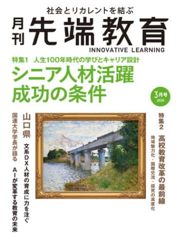
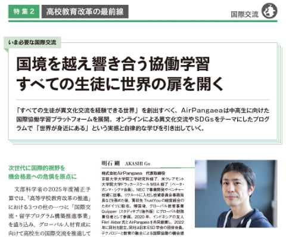
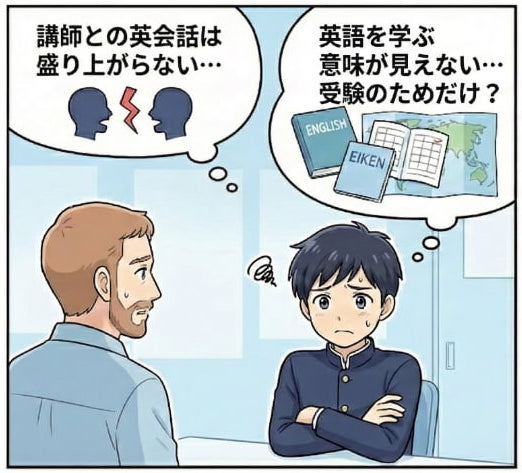
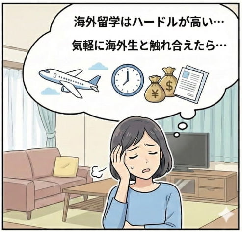
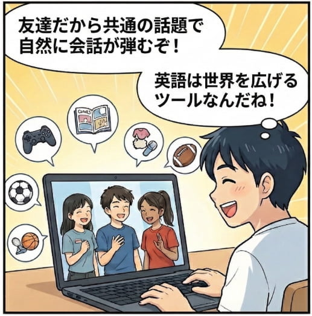
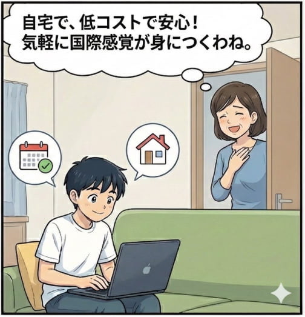
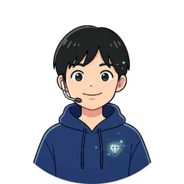

中高生のためのオンライン英語留学 先生じゃなく友達。 だから話せる
「月刊先端教育」 2026年3月号に掲載


*自社アンケート 2024-2025年
【動画】どんな海外の友達がいるの？ 🌏
🔊 タップで音声ON（約1分30秒）
TOMODACHI留学は、中学生・高校生を対象としたオンライン英語留学プログラムです。毎週、海外の同世代とマンツーマンで英語交流し、実践的な英会話力と異文化理解を身につけます。
参加者の進路実績 🌸
体験記をご寄稿いただいた方の進路先（一部）
慶應義塾ニューヨーク学院
NUCB International College（国際高等学校）
神戸市外国語大学
青山学院大 / 立教大 / 日本女子大
📢 お子様の英語学習、こんなお悩みありませんか？


TOMODACHI留学で解決！


参加生徒のプロフィール
東日本
東京（女子学院/駒場東邦/立教女学院...）神奈川（聖光学院/慶應湘南藤沢...）他
+
北海道（立命館慶祥/大空）/ 青森（弘前南）, 宮城（仙台育英/仙台三桜）, 山形（庄内総合）, 福島（福島成蹊）, 新潟（新潟東）, 茨城（江戸川学園取手/水城/茗溪学園）, 栃木（宇都宮短大附）, 埼玉（開智未来/開智中/浦和ルーテル学院中/原山中）, 東京（女子学院/駒場東邦/立教女学院/東洋英和女学院/都立小平/日本大学第一/法政第二/川村/和光中/香蘭女学校/東京電機大学高校/青稜/創価/正則学園/足立学園中/実践学園/京華/和光/聖パウロ学園/田園調布雙葉中/東京都市大学附属中/鴎友学園女子中/目黒西中/町田第三中/八王子市立打越中/町田市立大倉小）, 神奈川（聖光学院/慶應義塾湘南藤沢/フェリス女学院/湘南白百合学園/洗足学園/中央大学附属横浜/法政大学第二/桐蔭学園/海老名/有馬/綾瀬/横浜市立東/横浜隼人/白山/横浜創英/川崎市立井田中）, 山梨（山梨/日本航空）
西日本
愛知（名古屋/春日井/名大附属...）大阪（高槻/清風南海...）他
+
石川（金沢大学附属/金沢市立長町中）, 福井（鯖江中）, 静岡（桐陽/浜松市立中部中/静岡北/静岡英和女学院）, 愛知（名古屋/春日井/名古屋大学教育学部附属/名古屋経済大学附属市邨/阿久比中/知多中）, 大阪（高槻/清風南海/関西インターナショナル/大阪YMCA）, 兵庫（須磨東/松蔭/葺合/西宮東）, 奈良（県立国際学校中等部/奈良学園中/奈良女附属中）, 島根（県立隠岐島前）, 岡山（県立倉敷天城）, 広島（近畿大学付属広島東広島校/広島大学附属中/ノートルダム清心）, 山口（野田学園）, 高知（高知国際）, 熊本（尚絅/熊本高専）, 宮崎（富島高）, 鹿児島（明和中）, 沖縄（沖縄/琉大附属中/那覇国際/N高等学校/KBC高等学院）
海外
インドネシア（Labschool/Kharisma Bangsa/Kartini...）フィリピン（Batangas State...）他
+
カナダ（Abbotsford Senior Secondary School）, オーストラリア（Hills International College）, 香港（香港日本人学校）
インドネシア：ジャカルタ首都圏（SMA・SMP Labschool Cirendeu / SMA・SMP Labschool Jakarta / SMP Kharisma Bangsa / SMA Kartini 1 / MA Pembangunan Jakarta / SMA Dwiwarna / SMA Al-Hasra / SMAN 62 Jakarta / Madania School / SMA Korpri Bekasi / Dinamika Umat in Bogor / SMAN 5 Tumbun Selatan / SMA Islam Sinar Cendekia / SMA Budi Cendekia Islamic School / SMPN 8 Jakarta）, 他エリア（SMAN 2 Yogyakarta / SMA Trimrti / MTsN 1 Pandeglang）
フィリピン：マニラ近郊（Batangas State University - ARASOF Nasugbu Campus）
マレーシア：クアラルンプール近郊（SMA Persekutuan Kajang）
参加者の声
日本生徒の声のあとに、海外生徒の声が続きます

← スクロールして詳しく見る →
レッスン概要と流れ
「国際交流」×「英会話」を60分に凝縮
- 国際交流：同じ英語学習者であるアジアの同世代と交流。等身大のパートナーから刺激を受け、世界を自分事として捉える感性を養います
- マンツーマン実践：学んだフレーズを複数の相手と1対1で実践。多様な表現に触れることで、どこでも通じる自然な会話力を養います
- 提携校による推薦：各国の進学校が推薦した意欲的な生徒のみが参加。身元が確かな同世代と、安全に深く繋がることができます。
- 認定証発行：高校や大学の入試で活用できる国際系の活動実績を得られます
中学1年生〜高校3年生
- スタンダードコース：英検準2級〜準1級相当
- アシストコース：英検3級相当
（日本語サポート付き） - Global Academic Passコース：中3以上・英検2級以上推奨（詳細はこちら）
- 日本 🇯🇵 4名
- 海外 🇮🇩🇵🇭🇲🇾 4名
（インドネシア/フィリピン/マレーシア） - 講師とアシスタントが指導・サポート
- 海外生は提携校推薦：現地校の先生から「学習意欲が高く、コミュニケーションを大切にする」と太鼓判を押された生徒が参加
- 海外生は3ヶ月に一度、一部が入れ替わることで新しい友達との出会いの機会を創出
- 60分（毎月4回）
- 月曜〜金曜から選択
- 20:30〜21:30 または 22:00〜23:00
- 1ヶ月から始められます（月毎に退会可）
-
1講義とグループレッスン（20分）テーマや学習ポイントに沿ったフレーズを学びます
-
2マンツーマン交流・実践（30分）複数の海外生との1対1交流で、学んだ表現を実践します
-
3振り返りとまとめ（10分）定着確認と次回へのポイント整理を行います
※グループ構成や当日の出欠状況により、一時的に1対2 / 2対1の交流になる場合があります。
講師紹介
信頼できるプロフェッショナル
Marina
国際交流プロフェッショナル
フィリピン出身・日本在住。交流プログラムの進行を担う人気スタッフです。講師経験も豊富で、日本生への深い理解に基づいた「わかりやすく楽しい」場作りと、情熱あふれるリードが持ち味です。

Nerissa
IBDP現役講師
フィリピン出身・日本在住。IBDP（国際バカロレア）現役講師。3カ国での多彩な指導実績を活かし、温かくフレンドリーに学びの幅を広げます。
Jomer
教育委員会採用の現役講師
フィリピン出身・日本在住。教育委員会に直接採用されている実力派の現役講師。理科教師やインター校での豊富な経験を活かした、明るく活気あふれるレッスンが人気です。
料金プラン
お子様のレベルに合わせて選べるコース
スタンダードコース
- 英語のみのイマージョン環境
- 週1回60分のレッスン
- プログレス認定証発行
アシストコース
- 日本語サポート付き
- 週1回60分のレッスン
- プログレス認定証発行
Global Academic Passコース
海外の同世代とアカデミックなテーマを英語で議論し、IELTS型のスピーキングとライティングにも取り組む上位コース。論理的に伝える力を磨きます。中3以上・英検2級以上推奨。
11,800円/月（税込 12,980円）
📚 コンボ（スタンダード＋GAP）
2つのコースを併用し、週2回学べます。月額 16,800円／税込 18,480円（入会月は25%OFFで 12,600円／税込 13,860円）。週2回の日程は個別に調整します。
※ すでにスタンダードを受講中の方がGAPを追加する場合は、追加分（差額）が入会月25%OFFの対象です。
🎉入会キャンペーン：入会月は 25%〜50%OFF
- どなたでも入会月の月額料金が25%OFF
（スタンダード 6,600円／税込 7,260円、アシスト 10,350円／税込11,385円、GAP 8,850円／税込 9,735円） - ターム途中からのご参加は入会月50%OFF
（スタンダード 4,400円／税込 4,840円、アシスト 6,900円／税込7,590円、GAP 5,900円／税込 6,490円）※ ターム途中参加枠は空き枠がある場合に限ります。
👫 友達紹介割引
お友達と一緒に始めると、入会翌月も25%OFF（ご紹介者・お友達の双方／翌月も継続の場合）。
🗓️ 1ヶ月から始められます
月額制で最低受講期間はありません。毎月15日までに申請いただければ当月に退会いただけます。
よくあるご質問
Q 申し込みからレッスン開始までの流れを教えてください。 +
- まずはWebフォームから、ご希望のレッスン日時（第3希望まで）を選んでお申し込みください。
- 事務局よりクラスの確定とお支払い案内をメールでご連絡します。
- お支払いを確認後、ご案内日からレッスンを開始いただきます。
Q 海外から参加する生徒について教えてください +
- 海外校に在籍確認が取れた生徒のみ参加を認めているため、安心して交流いただけます。
- 過去のプログラムで明るく積極的に交流し、日本生とのコミュニケーションを大切にしてくれた生徒、または、その基準で海外校から推薦を得た生徒のみを厳選してご案内しています。
- これまでのクラスでも、こうした海外生のおかげで自然と信頼関係が築かれ、毎回楽しく学べる環境が生まれています。
Q マンツーマン交流について教えてください +
- レッスン時間の30分程度、マンツーマン交流を行います。
- ブレイクアウトルームに分かれて入室し、講師が案内するテーマ・方法に沿って、海外生徒と1対1で会話します。（場合によっては、1対2や2対1になることもあります）
- 講師やアシスタントがルームを巡回して、指導・支援を行います。
Q グループ掲示板について教えてください +
- 入会が決定したら、毎週一緒に学ぶ日本生徒と海外生徒はオンライン掲示板に招待されます。
- 掲示板は、講師の案内に従い、自己紹介や日々の出来事を綴って頂きます。また、自由に交流することもできます。
- ファーストネームと苗字のイニシャル（例：Taro Y.）のみがメンバーに共有され、それ以外の情報はわからないようになっています。
Q スタンダードコースとアシストコースの違いは何ですか。 +
- スタンダードコースでは、レッスンは基本的に英語で行われ、選抜された海外生との英語イマージョン環境で学びます。
- アシストコースでは、日本語サポート付き英会話環境で学ぶため、より丁寧な指導が受けられます。レッスンコンテンツは英検3級相当の生徒が学ぶ内容となっております。
Q Global Academic Passコースの詳細を教えてください。 +
Global Academic Passコースは、論理・アカデミック英語を海外の同世代とのディスカッションで磨く上位コースです。環境・テクノロジー・教育などの社会・学術テーマを英語で議論し、ORESという「型」を使って意見を筋道立てて伝える力や、IELTSのフォーマットに倣ったスピーキング・ライティングに取り組みます。英検2級以上を推奨しています。
Q 参加にはどの程度の英語力が必要ですか。 +
- スタンダードコースは英検準2級以上の英語力を推奨しています。レッスンでは海外生徒と会話する場面も多いため、ゆっくりでも自分で文章を組み立てられる生徒、もしくは単語だけでも積極的に会話できる生徒であれば楽しくご参加いただけます。
- アシストコースは英検3級相当の英語力の生徒を想定していますが、日本語サポートがあるため、基本的な単語や簡単な表現を知っていれば楽しくご参加いただけます。
- Global Academic Passコースは英検2級以上の英語力を推奨しています。スタンダードコースで培った英語力を土台に、アカデミックな議論やライティングへ発展させたい生徒におすすめです。
- 迷われている場合は、お申し込みの際にご要望欄にご記入いただければ、最適なコースをご提案いたします。
Q 英語を英語で学んでも理解できますか? +
- スタンダードコースでは授業は基本的に英語で行われますが、わかりやすい英語を使い、テキストを画面共有しながら進めるため、英検準2級程度の英語力があれば理解できます。わからないことがあれば、必要に応じて日本語で補足説明することも可能です。
- アシストコースでは、日本語による説明が約30%含まれるため、英検3級レベルの生徒でも安心して学ぶことができます。
- テキストはレッスン前に確認することも可能なため、不安な場合はレッスンで用いる語彙やフレーズなどを予習することが可能です。
Q 講師は選べますか。 +
- 時間割によって担当講師とアシスタントが決まっています。もしご希望があれば教えてください。
- 講師の体調不良などの理由で代替講師やアシスタントがクラスを担当する場合があります。
Q 塾や習い事の予定が流動的で、日時を決めかねています。 +
途中でのクラス変更も柔軟に承っていますので、まずは見えている予定でクラスを開始ください。あらかじめ変更の可能性がある旨をお伝えいただければ、予定が見えてきた段階でご都合がつく時間帯のクラスを提案させていただきます。
Q レッスンの課題はありますか。 +
- 月に1回程度、日記などの課題をグループ掲示板に投稿していただくことがあります。その他、グループ掲示板に自己紹介などを投稿してもらうことがあります。
- テキストはレッスン前に確認することが可能なため、用いる語彙やフレーズなどを予習することも可能です。
- なお、Global Academic Passコースでは、隔週でIELTS型のライティング課題に取り組みます。
Q 振り替えやキャンセルはできますか。 +
- メンバー固定のグループレッスンのため基本的には振り替えはできません。
- キャンセルは24時間前までに事務局にご連絡いただければ3ヶ月に1回のみキャンセルが可能です。キャンセルした分の授業料は翌月以降の授業料から引かれます。
Q 無料体験はありますか。 +
メンバー固定のグループレッスンのため無料体験はありませんが、以下の各種割引をご用意していますので、是非お試しください。
- 割引①：入会月は25%割引（全員対象）
- 割引②：ターム途中参加は入会月50%割引（限定枠のみ／空き枠については申し込みフォームの希望日程欄をご参照ください）
- 友達割引：お友達と一緒に申し込むと入会翌月も25%割引。（ご希望により同じクラスでの受講も可能です）
受講までの流れ
フォーム送信
Webフォームから希望レッスン日時を選んでお申し込みください。
日程確定・お支払い
クラス確定とお支払い案内をメールでご連絡します。
受講スタート
ご入金確認後、ご案内日からレッスンを開始いただきます。
クラスの空き状況
曜日を選んで空き状況をご確認のうえ、下記フォームよりご希望のクラスをお申し込みください。
※ アシスト・GAPコースは少人数・個別調整のため、上記スタンダードの時間帯を目安にご希望をお選びください。空き状況は目安です。
お申し込み
ご希望のレッスン日時を選んでお申し込みください
📅 申込締切：6月25日（木）23:59
保護者の皆様へ
皆さま、エアパンゲア代表の明石です。このたびは、当社の TOMODACHI 留学をご検討いただき、誠にありがとうございます。
当社は5年にわたり、世界の中高生をつなぐ活動を展開してまいりました。当社のオンライン異文化交流 TOMODACHIプログラムやオンラインSDGs協働学習 MOTTAINAIプログラムは、成蹊中学・高等学校、武蔵高等学校中学校、西大和学園中学校・高等学校、徳島県立徳島北高等学校など、多くの教育機関にも国際教育の一環としてご活用いただいております。これまでに累計3,000名を超える中高生の皆様に異国の同世代との交流・協働の機会を提供し、約95%の参加者から「とても満足」「満足」との評価をいただいております。
TOMODACHI留学は、これまでのプログラム参加者の声と、私自身の留学経験をもとに、2024年11月に開発・開始した新しい取り組み「TOMODACHI英会話」を発展させたプログラムです。異文化交流の魅力はそのままに、英語力向上のための要素を組み込みました。
私は過去にニュージーランドで語学留学を経験し、多国籍のクラスで学ぶ楽しさを実感しました。韓国、ドイツ、タヒチ、ニューカレドニア、チェコ、ブラジルなど、様々な国から集まった同世代の人たちと英語を学びながら交流を深めた日々は、毎日が新鮮で貴重な体験でした。
この素晴らしい体験を、より多くの若い世代に提供したいという思いから、TOMODACHI留学 (旧TOMODACHI英会話) を開発しました。海外への渡航なしで、自宅にいながら国際交流と英語学習の機会を得られるこのプログラムは、グローバル時代を生きる若者たちにとって、大きな価値があると確信しています。
当社は東南アジアの学校との強いネットワークを有していますが、共同創業者がインドネシア人であることから、特にインドネシアとの繋がりが深いのが特徴です。ジャカルタ首都圏・日本語教師協会との提携により、日本語を学ぶ多くのインドネシアの中高生が当社の様々なプログラムに参加しています。
TOMODACHI留学には、このようなネットワークを活かし、多様な背景を持つ生徒たちの参加が見込まれています（現在はインドネシアからの生徒が多いですが、徐々に拡大予定）。彼らの多くは日本文化に深い興味を持っており、また、日本語を学んでいる生徒も多く、お互いの言語や文化について学び合える貴重な機会となります。
参加する海外の生徒たちは、アニメや音楽などの日本文化に魅了されている方が多く、中には将来の日本留学を視野に入れている生徒もいます。このような日本に興味を持つ海外の同世代と交流することで、お子様は自国の文化を客観的に見つめ直す機会を得られるでしょう。
過去の当社のプログラムへの参加者からは以下のような感想を多く頂いております。
- 海外の同い年の子と話して親しみを感じた。彼らの国を訪れてみたい！
- 自分がこれまでいかに小さな世界で生きていたかを実感した！
- 文法をあまり気にしなくても伝わった。英語を勉強している本当の意味がわかった！
- 日本の文化について説明する中で、自分の国のことをより深く知ることができた！
このような体験を通じて、多くの生徒さんが日本の外の世界に興味を持ち、英語学習への意欲を高めています。TOMODACHI留学 (旧 TOMODACHI英会話) をしばらく経験した高校生が、実際に海外に行くことを希望して半年から一年程度、海外留学に旅立たれる生徒さんも出てきました。また、一部の生徒さんは、国際教養や途上国に関心を持ち、それを大学で深く学びたいと総合型選抜入試を通じて歩みを進めていらっしゃいます（合格体験記集はこちら）。
TOMODACHI留学は、こうした国際交流の魅力と英語学習の実践的機会を組み合わせた、まさに「一石二鳥」のプログラムです。お子様の視野を広げ、英語力を向上させる絶好の機会となりますので、是非お子様とご相談の上、ご参加をご検討いただければ幸いです。チーム一丸となって丁寧にサポートさせていただくことをお約束いたします。
ご質問や不明点がございましたら、問い合わせフォームよりお気軽にご連絡ください。
最後までお読みいただき、誠にありがとうございます。皆様のご参加を心よりお待ちしております。